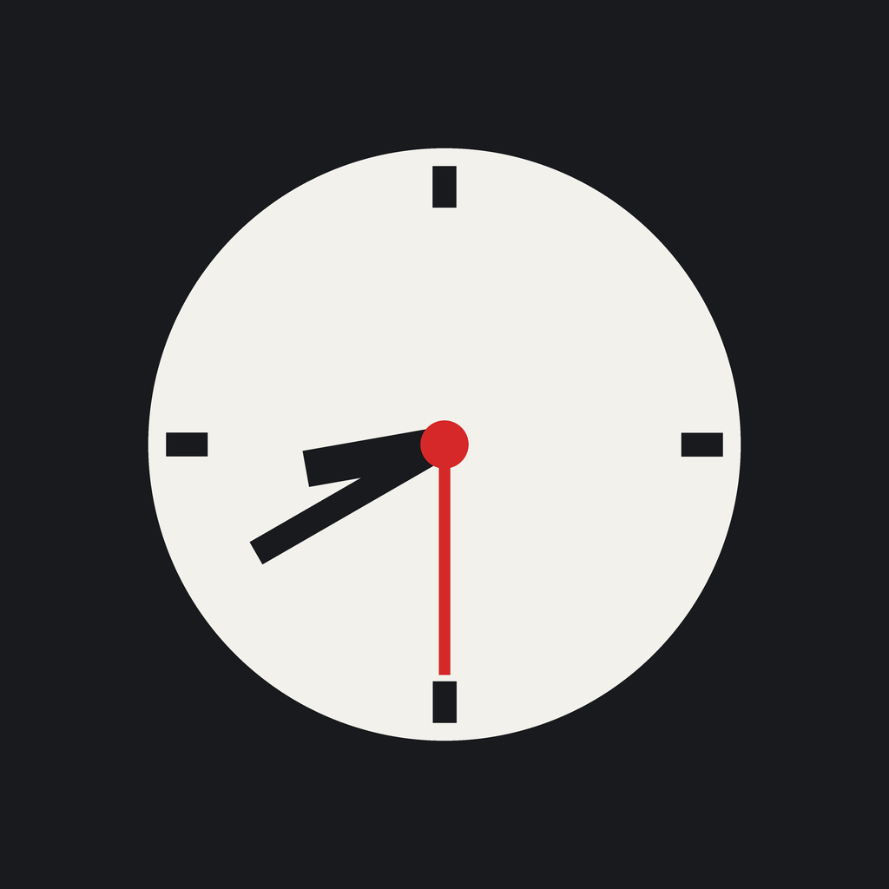

실전 대비 시험 타이머

모의고사를 실전처럼
총 시간은 보이는데 그 안의 배분은 보이지 않습니다. 그래서 앞에서 넘긴 시간을 모른 채 가다가, 막판에 남은 문항을 못 풉니다.
시험을 구간으로 나누고 각 구간에 분을 배정합니다. 시험 중에는 지금 몇 번째 구간인지, 계획보다 얼마나 넘겼는지 보입니다.
3 구간 중 1
실제 시험 시작 시각부터 흐르는 아날로그 시계를 보여줍니다. 밤 9시에 연습해도 시계는 08:40부터 갑니다.
60분 시험을 50분에 풉니다. 그런데 시계침은 60분 속도로 돕니다. 시험장에서 익힌 시계 감각을 유지하면서 시간을 미리 벌어두는 훈련입니다.